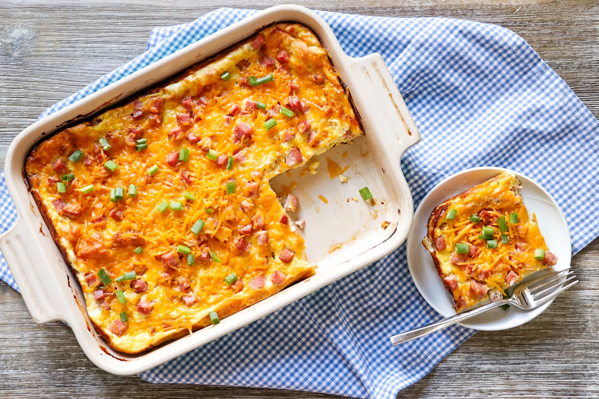

Home
Ham and Cheese Overnight Breakfast Casserole

Description
This delicious and easy breakfast casserole is a great way to use leftover cooked ham, but you can also substitute cooked bacon to change it up. You can make it the night before so all you have to do is bake it in the morning. If you're short on time or forgot to prep this the night before, it can also be made the same morning. The recipe yields 8 servings. Nutritional quantity per serving: 414 calories; protein 29g; carbohydrates 13.8g; fat 26.6g; cholesterol 337.9mg; sodium 1208.6mg.
Ingredients
- cooking spray
- 3 medium English muffins, split
- 12 large eggs
- 2 cups milk
- ½ teaspoon salt
- ¼ teaspoon ground black pepper
- ¼ teaspoon garlic powder
- ¼ teaspoon onion powder
- ¼ teaspoon ground mustard
- 1 pound cooked ham, diced
- 1 ½ cups shredded Cheddar cheese, divided
- ¼ cup chopped green onions
Steps
- Spray a 9x13-inch baking dish with cooking spray.
- Arrange English muffin halves in a single layer in the bottom of the baking dish.
- Whisk together eggs, milk, salt, pepper, garlic powder, onion powder, and mustard in a bowl until well combined.
- Pour egg mixture over English muffins in the baking dish.
- Sprinkle chopped ham and 1 cup Cheddar cheese on top of the egg mixture.
- Cover with foil and refrigerate overnight.
- Preheat the oven to 400 degrees F (200 degrees C).
- Bake in the preheated oven until eggs are set, 30 to 35 minutes.
- Sprinkle with remaining 1/2 cup Cheddar cheese and chopped green onions. Slice and serve.